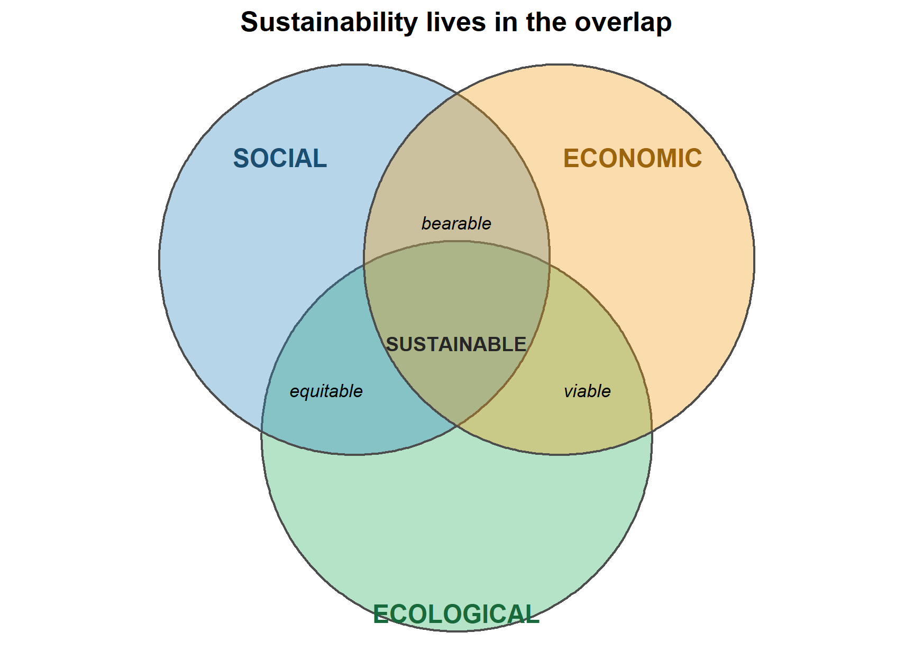
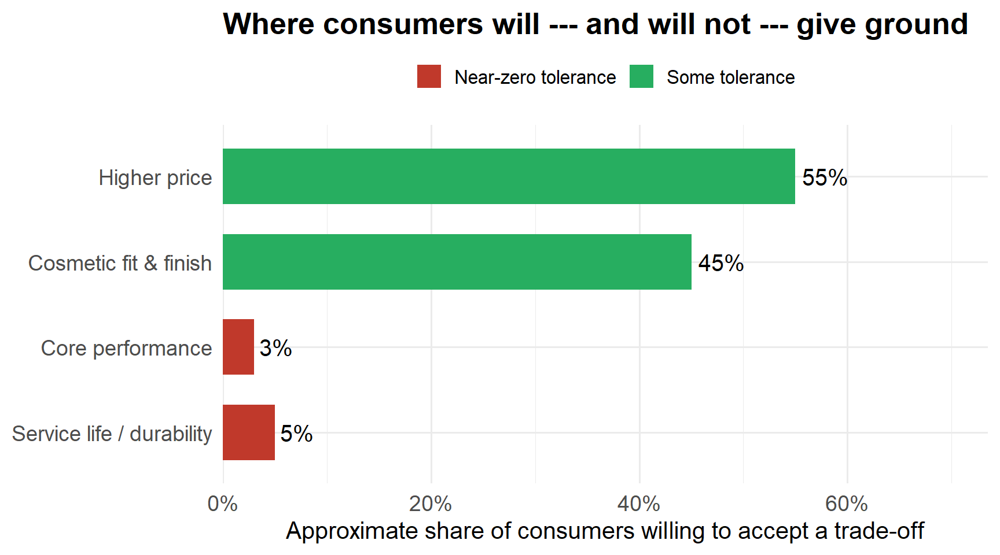
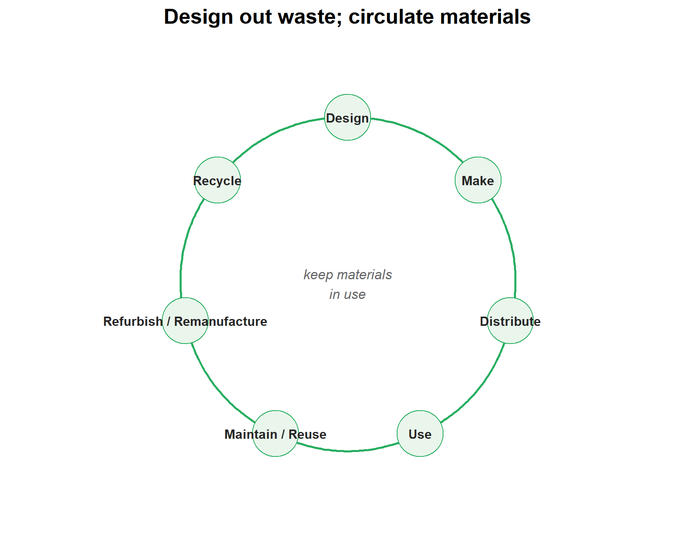

1 Sustainability
1.1 Learning Objectives
By the end of this chapter you will be able to:
- Define sustainability and sustainable design, and explain the three pillars (social, economic, ecological) and the “triple bottom line.”
- Identify the four points of the sustainability platform — recycling, bio-based/biodegradable polymers, material reduction, and design for recyclability — and give an engineering example of each.
- Interpret the seven plastic recycling codes and distinguish post-consumer from post-industrial recyclate.
- Analyze the trade-off between recyclability and biodegradability, using the corn-based PLA container case as the worked example.
- Calculate the material, energy, and carbon consequences of a design decision (material substitution, wall-thickness reduction) for a production run.
- Evaluate a product on whole-life cost, and explain why “cheaper to buy” and “cheaper to own” often disagree.
- Apply a sustainability checklist to a project: supplier selection, contract clauses, impact assessment, circular-economy principles, and sustainability KPIs.
Before we begin: think of the last thing you threw away today
Where did its materials come from? How long did you use it before it became waste? Where is it now — landfill, recycling stream, incinerator? Could a different design decision, made years ago by an engineer you will never meet, have changed that answer? Keep the object in mind; we will come back to it.
1.2 Introduction: every gram, multiplied by a hundred thousand
Here is the situation that runs through this whole book. Your company designs and manages the launch of a 1/18-scale radio-controlled vehicle replica for the toy market. If the prototype is accepted, you win a contract to build 100 000+ units for the next holiday season. Early on, you must choose the body material — steel, aluminium, or carbon fibre — and the frame material — aluminium or carbon fibre.
That single choice is not just a strength-and-weight problem. Multiply it by 100 000 units and it becomes a decision about:
- how many tonnes of raw material leave the ground,
- how many megajoules of energy are spent turning that material into parts,
- how much scrap and packaging waste the line produces every shift,
- whether the finished toy can be recycled when a child outgrows it in three years,
- and whether your customer — a large retailer with its own public sustainability targets — will even put it on the shelf.
This is why sustainability belongs at the front of a project-management course, not tacked on at the end. The tools you meet in later chapters — scope, WBS, schedule, budget, risk — all decide how resources get spent. Sustainability is the question of whether that spend was worth it once you look past the launch date.
Note
Industry snapshot. General Motors’ CAMI Assembly plant in Ingersoll, Ontario — an hour from where this course is taught — runs landfill-free: every waste stream from daily operations is reused, recycled, or converted to energy. That is not a marketing slogan bolted onto an existing plant; it is a set of thousands of small design and process decisions of exactly the kind this chapter is about.
1.3 What sustainability means
The most quoted definition comes from the 1987 Brundtland report and is used almost word-for-word by the U.S. Environmental Protection Agency:
Sustainability is “meeting the needs of the present without compromising the ability of future generations to meet their own needs.”
The idea is older than the word. Thomas Jefferson expressed the same principle in financial terms: do not leave a debt for future generations to pay. Swap “debt” for “depleted resources, degraded ecosystems, and accumulated waste” and you have the modern version.
Sustainable design applies that principle to the things engineers actually produce. Wikipedia’s working definition is useful: the philosophy of designing physical objects, the built environment, and services to comply with the principles of social, economic, and ecological sustainability. The intent is to minimize negative environmental impact through skilful, sensitive design while holding a dynamic balance between economy and society.
1.3.1 The three pillars and the triple bottom line
Sustainability is usually drawn as three overlapping domains. A decision is sustainable only where all three overlap: it has to be socially acceptable, economically viable, and ecologically sound at the same time.
Discussion: which pillar does each of these decisions serve — and which does it ignore?
- A supplier offers motors 20 % cheaper, made in a plant with a poor safety record. (economic yes; social no)
- You switch the body to recycled aluminium, adding $0.40 per unit. (ecological yes; economic maybe)
- You keep an inefficient old assembly line running because retraining staff on a new one is disruptive. (social short-term yes; ecological and economic long-term no)
The point of the diagram is that a “win” on one pillar is not a win. You have to check all three.
1.4 The four points of the sustainability platform
For a product engineer, sustainability comes down to four levers:
- Recycling — can the material be recovered and used again?
- Bio-based or biodegradable polymers — can the material come from a renewable source, or return safely to the environment?
- Material reduction — can the product do its job with less material in the first place?
- Designing for recyclability — is the product built so that recovery is actually practical, not just theoretically possible?
The rest of the chapter takes these one at a time, then widens out to what sustainability means when you are managing a whole project rather than designing one part.
1.4.1 Sustainable design principles
The design literature expands the four levers into a set of working principles:
| Principle | What it means in practice |
|---|---|
| Low-impact materials | Non-toxic, sustainably produced or recycled materials that need less energy to process. |
| Energy efficiency | Choose manufacturing processes — and design products — that require less energy over their life. |
| Emotionally durable design | Build things people want to keep. A product kept for ten years instead of three cuts consumption and waste by more than any recycling scheme. |
| Design for reuse and recycling | Design for a commercial “afterlife” — but without compromising performance or service life to get there. It is a balancing act. |
Notice the tension already built in: “make it last” and “make it recyclable” pull in opposite directions, and “use less material” can fight “make it durable.” Good sustainable design is the art of resolving those tensions, not pretending they do not exist.
1.5 Recycling codes
Most rigid plastics carry one of seven resin identification codes — the number inside the chasing-arrows triangle. The code tells a sorting facility what polymer it is looking at. The three most commonly recycled are PET (#1), HDPE (#2), and PP (#5).
| Code | Abbreviation | Polymer | Typical products | Recycled easily? |
|---|---|---|---|---|
| 1 | PETE / PET | Polyethylene terephthalate | Drink bottles, food jars | Yes |
| 2 | HDPE | High-density polyethylene | Milk jugs, detergent bottles, piping | Yes |
| 3 | PVC / V | Polyvinyl chloride | Pipe, window frames, cable insulation | Rarely |
| 4 | LDPE | Low-density polyethylene | Films, bags, squeeze bottles | Sometimes |
| 5 | PP | Polypropylene | Bumpers, battery cases, living hinges, tubs | Yes |
| 6 | PS | Polystyrene | Foam packaging, disposable cups, CD cases | Rarely |
| 7 | OTHER | Acrylic, polycarbonate, PLA, nylon, multi-layer | Eyewear, headlamp lenses, RC-car bodies, PLA parts | Rarely |
Two grades of recyclate matter to a manufacturer:
- Post-industrial (a.k.a. regrind): clean scrap from your own or a supplier’s process — runners, sprues, start-up shots, off-spec parts. Easy to reuse because you know exactly what it is.
- Post-consumer: material that has been through a consumer’s hands. It must be collected, sorted, washed, ground, and often re-pelletized, and it can carry metal, labels, food residue, and other polymers. Much harder to work with, but it is the stream that actually diverts waste from landfill.
Think about it: your RC-car body is moulded from a glass-filled ABS/PC blend. Which recycling code does it carry, and what does that tell you?
It carries #7 (OTHER) — any multi-polymer blend or filled material that is not one of codes 1–6 lands here. In practice, #7 is rarely recycled through curbside programs: the blend cannot be melted back into a single clean polymer. If recyclability matters for this product, that is a signal to reconsider the material before tooling is cut, not after.
1.6 Recyclable vs. biodegradable: a real tension
Years ago the plastics industry pursued two waste strategies at once — recycling and biodegradability — and they turned out to be partly opposed. If you make a part from recyclate and want it to last (think plastic lumber, or a pallet), the last thing you want is biodegradable material mixed in, causing the part to fail early. Contaminate a recycling stream with enough compostable polymer and the whole batch can become unusable.
The industry chose recycling. But with fossil-fuel prices and supply security back in the spotlight, biopolymers have returned. Some of the earliest plastics were bio-based (cellulosics, natural rubber); many new ones are built from corn or potato starch. Polylactic acid (PLA) is made from corn starch and behaves a lot like PET, but it is harder to process and degrades faster at elevated temperature.
And “biodegradable” has an asterisk. Degradation is done by microbes, which need oxygen and moisture. A modern landfill is compacted, dry, and low-oxygen — almost nothing degrades well there. You can dig up decades-old newspaper and still read it.
Important
Case study — EcoPlast Packaging (MGMT-3105, Week 1). EcoPlast launched corn-based PLA food containers. Then: customers found them brittle in the cold and warped in heat; recyclers reported PLA contaminating conventional-plastic batches; consumers wanted eco-friendly and the same durability as regular plastic; and environmental groups argued the containers mostly ended up in landfill, where they did not meaningfully biodegrade — calling it “green marketing.”
Discussion (Week 1 case): was it unreasonably risky for EcoPlast to trade durability for sustainability, and what would you change?
Model answer. A product that fails in real-world use creates more waste, erodes consumer trust, and undermines the point of sustainability — so yes, the trade-off as executed was unreasonably risky. Consumers share some responsibility for unrealistic expectations, but the company had a duty to manage those expectations and to test properly before launch. Rushing to market compromised quality.
What to change: (1) real R&D and performance testing across the actual temperature and handling range before launch; (2) an accurate caution label (“not suitable for hot liquids”) — a danger label would be excessive; (3) consumer education on correct disposal (industrial compost, not curbside or landfill); (4) stop marketing the product as fully “sustainable” until there is evidence of an environmental benefit in real disposal conditions — otherwise the claim is exposed to a misleading-marketing challenge.
1.7 Material reduction
Reducing the material that goes into a product — at the design stage, by thinning walls, removing bosses, right-sizing ribs, or substituting a lighter material — pays off several times over:
- the product costs less (less material bought per unit),
- there is less to recycle or dispose of at end of life,
- more material is left for other uses,
- and less energy is spent producing and transporting every unit.
The catch: you cannot thin your way past the product’s functional requirements. Material reduction is enabled by better material properties, better processes, and better analysis — not by wishful thinking.
1.7.1 Worked Example 1: thinning the RC-car body
Your baseline RC-car body is injection-moulded ABS with a mass of 48 g. Simulation says you can drop the nominal wall from 2.5 mm to 2.1 mm and still pass the drop test, cutting body mass to 41 g. The contract run is 120 000 units. ABS costs $3.10/kg, its production embodied energy is about 90 MJ/kg, and its cradle-to-gate carbon intensity is about 3.4 kg CO2e/kg.
Live cell — change the mass reduction, the run size, or the material’s cost and energy factors.
A 7 g decision, taken once on a screen, moves almost a tonne of material and several tonnes of CO2e once it is multiplied by the production run — before counting the lighter shipping weight.
1.7.2 Try it yourself: the material-choice decision
Now compare the three candidate body materials head to head. The live cell below holds rough figures for steel, aluminium, and carbon-fibre composite bodies of the mass each material would need for equal stiffness. Change the numbers, add a recycled-content option, or change the run size and see what happens to cost, energy, and carbon.
What the numbers usually show — and why the “greenest” answer is not obvious
Carbon fibre gives the lightest body, which cuts shipping energy and, in a real vehicle, fuel over the whole service life. But its production energy and carbon per kilogram are the highest of the three, and it is the hardest to recycle (code #7, thermoset matrix). Steel is cheap and highly recycled but heavy. Aluminium sits in between and is excellent if you can get recycled stock — secondary aluminium uses roughly 5 % of the energy of primary.
For a toy that is shipped once and never driven under its own power for thousands of kilometres, the use-phase fuel saving from carbon fibre never arrives — so the decision tilts back toward recycled aluminium or steel. The lesson: the right material depends on where the impact actually lands in the life cycle.
1.8 Designing for recyclability
Recyclability is designed in, not hoped for. The checklist a plastics engineer can actually influence:
- Make the assembly from a single material, or from compatible materials that can be recycled together.
- Make it easy to disassemble.
- Prefer snap-fits and press-fits over screws and metal fasteners.
- Reduce the part count.
- Avoid labels (or use same-polymer labels / in-mould labelling).
- Keep thermosets out of thermoplastic assemblies — use thermoplastic elastomers instead of rubber seals where you can.
You may not have the final word on a design, but you can always offer the greener alternative. And the mindset has shifted: products used to be designed for end of life — last for period X, then done. Now good products are designed for next life: what can this material become after its first use?
Try it: redesign the RC-car battery door for recyclability
Current design: ABS door, two stainless M2 screws, a printed polyester label, a moulded-in TPE gasket (thermoset-like behaviour), a steel spring.
One redesign:
- Replace the two screws with a living hinge + snap latch moulded into the door (same ABS) — removes two dissimilar-metal fasteners and a driver operation on the line.
- Replace the adhesive polyester label with in-mould labelling in an ABS-compatible film, or mould the text into the part.
- Replace the steel spring with a moulded ABS cantilever spring if the cycle life allows.
- Keep the TPE gasket but make it a removable press-in part in a recycling-compatible grade, or switch to a moulded-in flexible ABS lip if the seal spec allows.
Result: the door goes from five materials and two fasteners to essentially one polymer, snaps apart by hand, and carries no adhesive.
1.9 The consumer’s perspective
Sustainable design has to survive contact with real buyers. Market research is consistent on two points:
- Environmentally conscious consumers will pay marginally more and accept marginally lower fit and finish for a product that is genuinely more environmentally friendly.
- They have zero tolerance for a drop in performance/functionality or in service life. They bought the product to do a job. If a “sustainable” design wears out sooner, it just gets replaced sooner — consuming more resources and defeating the purpose.

1.9.1 Whole-life cost: cheaper to buy vs. cheaper to own
This is where planned obsolescence enters. A business may have a commercial reason to limit a product’s life — it protects repeat sales. Sustainable design pushes the other way: make it last. The buyer’s own wallet is often on the side of durability, even when the sticker price is higher.
The live cell compares a cheap version of a product (low price, short life, replaced repeatedly) with a durable version (higher price, lasts the whole period). Change the prices, lifetimes, and horizon and watch which one wins on total cost of ownership — and on units sent to landfill.
Where does the cheap option actually win?
Shorten the horizon (you only need the product for a year), or make the durable version’s premium extreme relative to its extra life, and “cheap” wins on cost. But the waste count almost always favours durable: five landfilled units versus one. Whole-life thinking means putting both numbers — dollars and units — in front of the decision-maker, not just the sticker price.
1.10 Sustainability in project management
Everything above was about designing a part. When you are running a project, sustainability becomes a set of management actions spread across the whole life cycle. The MGMT-3105 checklist:
Procurement and contracts
- Choose eco-friendly and ethical suppliers; audit them for compliance.
- Put sustainability clauses in contracts.
- Perform an Environmental & Social Impact Assessment (ESIA).
Design and materials
- Minimize raw-material use; prioritize recyclable, renewable, and local resources.
- Design for energy and water efficiency.
- Apply circular-economy principles: reuse, refurbish, recycle.
- Plan the product/service lifecycle — what happens to it after the project ends.
Operations
- Reduce carbon emissions from transport and operations.
- Use digital tools to cut paper and travel.
- Run proper waste management: segregation, recycling, safe disposal.
People and governance
- Safeguard health, safety, and well-being of the team and the community.
- Support social responsibility: local hiring, fair wages, training.
- Track sustainability KPIs: carbon footprint, waste-reduction %, energy saved.
- Monitor suppliers and contractors; identify and mitigate environmental and social risks; run sustainability audits when needed.
1.10.1 The circular economy
The circular economy is the alternative to the linear take — make — use — dispose model. Instead, material is kept in use through loops of increasing size: maintain and reuse first, then refurbish and remanufacture, then recycle, with disposal as the last resort.

1.10.2 Try it yourself: a sustainability KPI snapshot
Sustainability only gets managed if it gets measured. The live cell computes a few of the KPIs from the checklist for the RC-vehicle project: carbon footprint per unit, waste-diversion rate, and recycled-content share. Adjust the inputs to your own project assumptions.
1.11 Key Takeaways
- Sustainability = meeting present needs without compromising future generations’ ability to meet theirs. Sustainable design applies that across social, economic, and ecological pillars at once — a “win” on one pillar is not a win.
- The four levers for a product engineer: recycle, bio-source/biodegrade, reduce material, design for recyclability.
- The seven resin codes tell a sorter what a plastic is; PET (#1), HDPE (#2), and PP (#5) recycle well, #7 (blends/PLA/filled) rarely does. Post-consumer recyclate diverts real waste but is hard to process; post-industrial regrind is easy.
- Recyclable and biodegradable can conflict, and “biodegradable” does little in a dry, compacted landfill — the EcoPlast case shows what happens when that asterisk is ignored.
- A small material-reduction decision, multiplied by the production run, moves tonnes of material, energy, and CO2e. The “greenest” material depends on where in the life cycle the impact lands — use phase vs. production vs. end of life.
- Consumers give ground on price and cosmetics but not on performance or durability; whole-life cost usually favours the durable design on both dollars and landfill count.
- In project management, sustainability is a checklist across procurement, design, operations, and governance — backed by circular-economy loops and tracked with KPIs (carbon per unit, waste diversion, recycled content).
1.12 Case Study: Meridian R/C — Week 1
Tip📁 CASE STUDY FILE — Week 1: The Body & Frame Material Decision
Meridian R/C Vehicles is racing a deadline neither you nor your sponsor can move. Kestrel Retail Group, a national toy retailer, has told Daniel Cho, Meridian’s VP of Product, that if the Meridian Trailblazer — a 1/18-scale rally-truck replica — passes durability testing and toy-safety certification, Kestrel’s Category Buyer, Renata Ford, will place a 100,000+ unit production order in time for next year’s holiday season. Before a single tool is cut, you and your manufacturing engineer, Priya Nandakumar, have to settle the one decision that shapes every cost, mass, and end-of-life number that follows: what is the Trailblazer’s body and frame made of?
Priya frames it as a three-way trade study. Steel bodies would weigh about 140 g each and cost roughly $1.20/kg in raw material — cheap, but steel is the heaviest of the three candidates and, for this die-cast toy geometry, the least attractive to recycle back into value. Carbon-fibre composite is the opposite extreme: a 38 g body, the best strength-to-weight ratio by far, but at roughly $28/kg in material alone — and once a thermoset carbon-fibre part reaches end of life in a child’s toy box, there is no practical way to recycle it. Aluminium lands in the middle on every axis: about 70 g per body, $3/kg, and — critically — genuinely recyclable at scale.
| Candidate | Body mass | Material cost | End-of-life recyclability |
|---|---|---|---|
| Steel | 140 g | $1.20/kg | Heavy; low recyclate value for this design |
| Aluminium (chosen) | 70 g | $3.00/kg | High — genuinely recyclable |
| Carbon fibre | 38 g | $28.00/kg | Very poor — thermoset, effectively unrecyclable |
You, Priya, procurement lead Marcus Webb, and quality engineer Sofia Reyes agree: aluminium is the call for both the body and the frame. It is not the lightest option and it is not the cheapest raw material, but it is the only one that clears the bar on cost and recyclability at once — exactly the kind of “no pillar loses” decision the sustainability framework asks for. Carbon fibre does not disappear from the story, though. Fibro Source, a carbon-fibre supplier in Sherbrooke, Quebec that is mid-restructuring after a recent French acquisition, stays on the supplier list — not for the core prototype, but as an optional carbon-fibre trim and spoiler package Kestrel could offer later as a premium upsell. Daniel Cho signs off: aluminium body and frame, carbon fibre trim only if the business case for it ever appears.
1.13 Practice Problems
Problem 1: Packaging substitution (food industry)
A food-processing client ships 2.4 million meal trays a year. The current tray is 22 g of black CPET (#1, but often rejected by sorters because black plastic is invisible to optical sorting). A proposed natural-coloured PP (#5) tray weighs 19 g, costs $0.006/g versus $0.005/g for the CPET, and is accepted by the client’s regional recycler.
- What is the annual change in material mass and material cost?
- Give two non-cost arguments for switching, and one argument against.
Solution.
trays <- 2.4e6
mass_cpet_g <- 22
mass_pp_g <- 19
cost_cpet <- 0.005
cost_pp <- 0.006
mass_change_kg <- (mass_pp_g - mass_cpet_g) / 1000 * trays
cost_change <- (mass_pp_g * cost_pp - mass_cpet_g * cost_cpet) * trays
cat("Annual material mass change :", format(round(mass_change_kg), big.mark = " "), "kg",
"(a reduction)\n")
cat("Annual material cost change : ",
sprintf("$%s", format(round(cost_change), big.mark = " ")),
" (an increase)\n", sep = "")Annual material mass change : -7 200 kg (a reduction)
Annual material cost change : $9 600 (an increase)About 7 200 kg less plastic per year, but roughly $9 600/yr more spent on material because PP costs more per gram here and the 3 g saving does not fully offset it.
For: the natural-coloured PP is actually recovered by the recycler (black CPET usually is not), and PP trays tolerate reheating better. Against: higher material spend, and a tooling change is needed — capital plus a qualification run.
Problem 2: Recycled-aluminium body (automotive/toy)
Switching the RC-car body from primary to recycled aluminium keeps the mass at 70 g/unit but changes the cradle-to-gate energy from 155 MJ/kg to 8 MJ/kg and the carbon from 11 kg CO2e/kg to 0.6 kg CO2e/kg. Recycled stock costs $0.25/kg more. Run size 120 000 units.
Estimate the energy saved, the CO2e avoided, and the extra material cost.
Solution.
mass_kg <- 70 / 1000
units <- 120000
kg_total <- mass_kg * units
energy_saved <- kg_total * (155 - 8)
co2_saved <- kg_total * (11 - 0.6)
extra_cost <- kg_total * 0.25
cat("Aluminium in the run :", format(round(kg_total), big.mark = " "), "kg\n")
cat("Production energy saved :", format(round(energy_saved), big.mark = " "), "MJ",
sprintf("(~%s kWh)\n", format(round(energy_saved / 3.6), big.mark = " ")))
cat("CO2e avoided :", format(round(co2_saved), big.mark = " "), "kg",
sprintf("(~%.1f t)\n", co2_saved / 1000))
cat("Extra material cost :",
sprintf("$%s\n", format(round(extra_cost), big.mark = " ")))Aluminium in the run : 8 400 kg
Production energy saved : 1 234 800 MJ (~343 000 kWh)
CO2e avoided : 87 360 kg (~87.4 t)
Extra material cost : $2 100Roughly 1.2 million MJ (about 340 000 kWh) and 87 t of CO2e avoided for about $2 100 of extra material cost — one of the highest-leverage sustainability moves available on this project.
Problem 3: Design-for-recyclability audit (defense)
A defense client requires that field-returned electronic enclosures be materially recoverable. You are handed this enclosure: glass-filled nylon (#7) housing, 6 zinc-plated steel screws, a bonded aluminium RFI shield, a polyurethane potting compound over the PCB, and two adhesive asset-tracking labels.
List, in priority order, the four changes that would most improve material recovery, and note the functional risk of each.
Model answer.
- Replace the potting compound with a removable conformal coating or a gasketed enclosure. Risk: reduced shock/moisture protection — must re-qualify to the environmental spec.
- Eliminate the bonded aluminium shield; use a conductive coating on the nylon or a snap-in shield of the same-family metal. Risk: RFI performance must be re-verified.
- Swap the 6 steel screws for moulded snap features or same-metal fasteners. Risk: fewer re-assembly cycles; captive-hardware requirement may forbid it.
- Drop adhesive labels for moulded-in or laser-etched marking. Risk: contrast/legibility and traceability sign-off.
The housing polymer itself (#7 glass-filled) is hard to change if the structural spec depends on it — note it as a known limitation rather than a quick fix.
Problem 4 (discussion): planned obsolescence vs. sustainable design
“Sustainable design requires that our products last as long as possible. But business decisions may deliberately shorten product life to protect repeat sales — planned obsolescence. Which do you prefer, and how would you reconcile the two in a company that has to stay profitable?”
There is no single right answer — this is a position you argue. Strong answers usually land on service and circular business models: the manufacturer keeps revenue through repair, upgrades, refurbishment, take-back, or product-as-a-service, so “make it last” and “keep earning” stop being opposites. Weak answers just pick a side and ignore the constraint on the other.
1.14 Further Resources
- U.S. EPA — Learn About Sustainability: https://www.epa.gov/sustainability/learn-about-sustainability
- Brundtland Report (Our Common Future, 1987): https://sustainabledevelopment.un.org/content/documents/5987our-common-future.pdf
- Ellen MacArthur Foundation — Circular Economy Introduction: https://www.ellenmacarthurfoundation.org/topics/circular-economy-introduction/overview